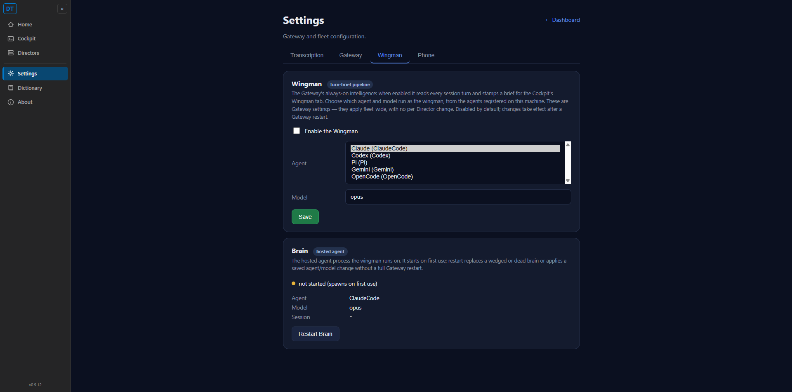
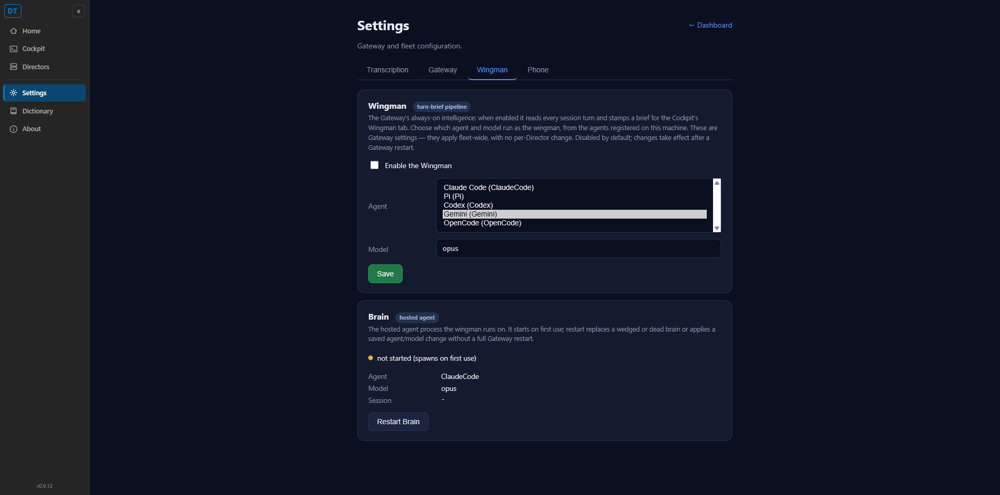

Title: [Wingman] Wingman settings: rename Tool to Agent and list every agent registered on this machine
PR: #522, branch issue-510-wingman-agent-picker
Method: Independent verification against the REAL CcDirector.Gateway.GatewayHost booted
in-process from the PR branch, serving the REAL unmodified Cockpit settings.html same-origin. The
Developer's fake Python proof server was NOT used. Read-only "real" mode confirmed the live agent list from the real
AgentEntryStore; "isolated" mode (a fresh temp CC_DIRECTOR_ROOT) exercised Save without
touching the user's config.json.
| # | Criterion | Expected | Actual | Result |
|---|---|---|---|---|
| 1 | The Wingman tab shows the label "Agent" (the word "Tool" no longer appears there). | Picker label reads "Agent"; no "Tool" word on the tab. | Picker label and Brain runtime row both read "Agent". The old label[for=braintool] is absent and the
word "Tool" does not appear anywhere on the page (DOM check + screenshot). |
PASS |
| 2 | The Agent dropdown lists every agent registered on this machine and matches the machine's agent list (more than one). | Dropdown shows all enabled machine agents. | Live /gateway/settings (real root) returned all 5 machine agents - Claude (ClaudeCode), Codex, Pi,
Gemini, OpenCode - with ids matching the real agent.entries (qa-c2, qa-cx, qa-pi, and the two GUID
entries). The dropdown rendered all 5. |
PASS |
| 3 | Choosing an agent, entering a model, and clicking Save stores both; reloading the page shows the saved agent and model. | After Save + reload, the dropdown pre-selects the saved agent AND the Model field shows the saved model. | Saved Gemini + gemini-2.5-pro via the real PUT (confirmation "Saved Gemini (Gemini) + gemini-2.5-pro").
After reload the dropdown DID pre-select Gemini, but the Model field showed opus, NOT the saved
gemini-2.5-pro. The agent round-trips; the model does not. |
FAIL |
| 4 | The saved choice is written to the gateway config (config.json + the settings response). | config.json holds the saved agent + model; GET reflects the saved agent. | Isolated config.json held brain_agent_id=90fddfdb-... (Gemini), brain_tool=Gemini,
brain_model=gemini-2.5-pro. The live GET brain.agentId reflected the saved id. (Write IS
durable - the defect in #3 is purely the GET/page not surfacing the saved model.) |
PASS (write side) |
gemini-2.5-pro), click Save. The
confirmation reads "Saved Gemini (Gemini) + gemini-2.5-pro".gemini-2.5-pro.
Actual: dropdown = Gemini (correct), Model = opus (the running-brain default, NOT the saved value).Root cause: the agent picker pre-selects from the saved config (brain.agentId reads
brain_agent_id live), but the Model field is bound to brain.model, which the GET sources from
the running brain (host.BrainModel, fixed at GatewayHost construction), not from the saved
brain_model in config.json. So a freshly-saved model is persisted to disk but never shown back on reload -
the two halves of the same picker disagree. The PR's own endpoint test even asserts this
(Assert.Equal(BrainModelConfig.Default, brain["model"]) after saving "sonnet"), which encodes the very
behaviour that violates AC3's "reloading the page shows the saved agent and model".
Agent label + all 5 registered machine agents (criteria 1 and 2):

After Save(Gemini, gemini-2.5-pro) + reload: agent pre-selected = Gemini, but Model = opus, not the saved model (criterion 3 FAIL):

Regression sweep: No adjacent breakage observed. Build clean
(scripts\local-build-avalonia.ps1 -Slot 11 -> 0 Warning(s), 0 Error(s)); the 6 Gateway brain-config
endpoint tests pass on a QA rebuild. The single defect is the model not round-tripping to the page on reload.
Conclusion: 3 of 4 criteria pass; criterion 3 fails. Bounced to the Developer Agent (flow:qa-failed).